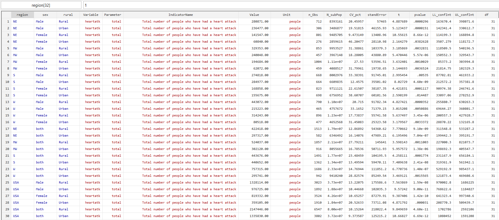

The use of the hiergeovars option
Before reading this article, it is highly recommended to get familiar with the basic use of the
genmdt [varlist] [, options] function (see Getting Started , genmdt)
Introduction
Hierarchic structure in dimension(estimation domain)
genmdt [varlist] [, options] estimates statistical indicators while accounting for
complex survey designs defined through svyset. The command generates estimates across
multiple dimensions specified in varlist, including all requested interactions between
dimensions. When some dimensions are hierarchically related (for example, region and district, or crop group and crop), many interaction combinations may
contain no observations. Although no estimates are produced for these empty cells, their inclusion can substantially increase computation time and memory
requirements. Efficient handling of hierarchical dimensions is therefore important, particularly when producing large multidimensional tables intended for
dissemination platforms such as Open Data portals, where geographic and other hierarchical variables should be displayed in the same column(variable) and
the hierachical link will be manages in the data model.
The hiergeovars options of
genmdt [varlist] [, options] has been introduced in this context to (i)
first to reduce computation cost and (ii) second to allow to have geographic variables in the same column named geovar.
In case one want to hierarchical geographic variables in different columns (for example region and district in columns region and
district in the layout), one can specify both variable in the dimensions in varlist
and use the option conditionals to instruct
genmdt not to consider the interaction between those two variables.
The use of the option conditionals enable variables that are excluded
in different combination of dimension to have have missing value. Those missing values are coded to all combined
to singnify all category combined for that dimension. It is like systematic use the the margin, if not specified with the option
marginlabels
Examples
* Load example dataset
use "https://www.stata-press.com/data/r19/nhanes2.dta", clear
* We use the variable strata as example to play the role of district. In the dataset, each stratum are located in a given region
gen strata_str="Strata_"+string(strata)
encode strata_str,gen(district)
* Defining the sampling design
svyset psu [pw=finalwgt], strata(strata)
* Generate multi-dimensional table
genmdt sex, marginlabels("sex@both") ///
hiergeovars(region district) geomarginlab("USA") ///
mean(highbp diabetes) total(heartatk) integer(heartatk) ///
units("highbp@%" "diabetes@%" "heartatk@people") ///
indicator( ///
"highbp@Proportion of people with high blood pressure" ///
"diabetes@Proportion of people with diabetes" ///
"heartatk@Total number of people who have had a heart attack" ///
)
* Display first observations
* Load example dataset
use "https://www.stata-press.com/data/r19/nhanes2.dta", clear
* We use the variable strata as example to play the role of district. In the dataset, each stratum are located in a given region
gen strata_str="Strata_"+string(strata)
encode strata_str,gen(district)
* Defining the sampling design
svyset psu [pw=finalwgt], strata(strata)
* Generate multi-dimensional table
genmdt sex, marginlabels("sex@both") ///
hiergeovars(region district) geomarginlab("USA") ///
mean(highbp diabetes) total(heartatk) integer(heartatk) ///
units("highbp@%" "diabetes@%" "heartatk@people") ///
indicator( ///
"highbp@Proportion of people with high blood pressure" ///
"diabetes@Proportion of people with diabetes" ///
"heartatk@Total number of people who have had a heart attack" ///
)
* Display first observations

Change in the results layoutYou will notice a slight change in the output variable. There is no column named region or strata. Hierachical geographic variables appear in a single colom names geovar. Besides, there is an additional variable named "geoType" which contain the geographic variable name for each line of the output. The variable can be used in if in tabm_from mdt to restrict geographic values in geovar that should be display in the output table.
Alternative to hiergeovars
One have hierarchical geographic variable and decides to have them in different column. This can be done by the geographic variables in varlist (in ). Given that interaction between those variables will be evaluated when doing so, we recommending disabling the evaluation on the interaction by specifying it in logical form through the use of the option conditionals
* Load example dataset
use "https://www.stata-press.com/data/r19/nhanes2.dta", clear
* We use the variable strata as example to play the role of district. In the dataset, each stratum are located in a given region
gen strata_str="Strata_"+string(strata)
encode strata_str,gen(district)
* Defining the sampling design
svyset psu [pw=finalwgt], strata(strata)
* Generate multi-dimensional table
genmdt sex region district, marginlabels("sex@both" "region@USA") conditionals(!(2&3)) ///
mean(highbp diabetes) total(heartatk) integer(heartatk) ///
units("highbp@%" "diabetes@%" "heartatk@people") ///
indicator( ///
"highbp@Proportion of people with high blood pressure" ///
"diabetes@Proportion of people with diabetes" ///
"heartatk@Total number of people who have had a heart attack" ///
)
* Display first observations
ageistoolkit use the package tuples to generate the different combination of dimension before passing them in over in svy to generation indocators computed from mean, total, edian or ratio. tuples have the option conditionals, which is the same as in genmdt, used to exclude some combination
*Generate differente combination of sex, region and district
tuples sex region distrcict, diplay
tuple1: district
tuple2: region
tuple3: sex
tuple4: region district
tuple5: sex district
tuple6: sex region
tuple7: sex region district
*Generate differente combination of sex, region and district, by excluding combination containing both region and district
tuples sex region distrcict, contiditionals(!(2&3))
tuple1: distrcict
tuple2: region
tuple3: sex
tuple4: sex distrcict
tuple5: sex region
The use of the options conditionals will systematically enable the computation of the margins with a category "all combined", if the margin is not specified in the options marginlabels.